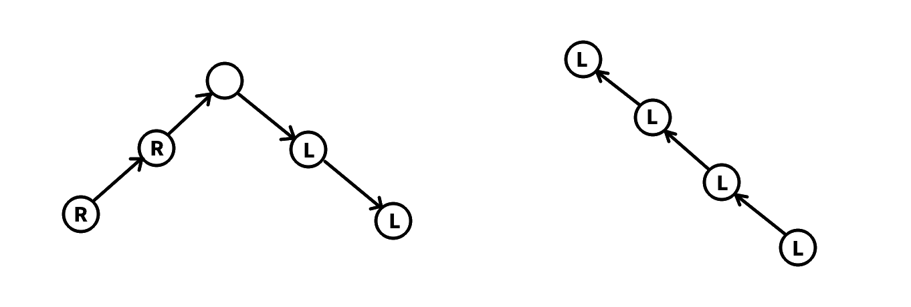

高爸的杂题练习 3
文章目录
Cool Slogans
给出一个字符串，要求构造一个字符串序列满足：
- ；
- 是的子串且在中出现了至少次（出现的位置可以部分重叠）。
求出最大的。
。
摘要：Fail 树上双指针，线段树维护 Right 集合。
我们可以让是的子串，这样答案不会变劣。
容易发现，一定存在一种最优方案使得：
- 是的子串；
- 是的后缀且在中出现了至少次（出现的位置可以部分重叠）。
这样的话就是在 Fail 树上的祖先关系。
考虑建出的 Fail 树后，记表示为代表的子串时的的最大值。我们可以不停跳父亲，直到遇到第一个在中出现 2 次的状态，然后转移。然后容易发现我们可以用树上双指针（或者倍增、二分）来完成这个过程。因此问题转化为，如何快速判断状态在状态中出现了至少 2 次。
这个问题也不难。使用线段树合并求出每个结点的 Right 集合后，我们只需要在的 Right 集合中随便找一个位置，然后在的 Right 集合中求出这个位置的前驱就可以判断了。
时间复杂度。
How Many Substrings
给你一个串，次询问，问的本质不同子串的个数。
。
摘要：离线，线段树按左端点统计子串个数，在 Fail 树链上更新线段树，用 LCT 维护 Fail 树。
考虑离线，将询问按右端点分类。
对于 S 的一个前缀，维护序列表示最晚出现位置的左端点为的本质不同子串数。因此对于的询问，我们可以查询上的区间和来求出答案。
当在后面加一个字符，我们就需要更新一部分子串的最晚出现位置。
容易发现，在 S 的 SAM 增量构造过程中，我们插入了这个字符后，Fail 树上新的 Last 到根的路径上的状态的最晚出现位置都发生了变化。因此我们可以暴力跳 Fail 树的父亲来更新。由于一个状态代表了长度为的若干个子串，因此一次更新操作相当于是做次区间加（减）。
使用线段树维护，则时间复杂度是的。
容易发现，对于 Fail 树上的一条链（端点为祖孙关系的链），如果满足中的所有结点的最晚出现位置相同，那么这条链所代表的所有子串的左端点也是一段连续的区间。因此对于一条链我们可以在的时间内更新。
既然可以快速维护一条链的信息，那么我们使用 LCT 维护 Fail 树即可，时间复杂度。
历史研究
给你一个长度为的序列，定义在区间中的权值为的出现次数乘。定义区间的权值为的最大的的权值。
次询问区间权值。
。
摘要：分块。
考虑分块，设块大小为。预处理表示第块到第块的区间的权值。
预处理表示权值的出现位置集合。
查询的时候，整块的部分直接在上查询。零散的部分，我们枚举零碎部分的权值，然后在上查询在中的出现次数来更新答案。
要离散化。
预处理复杂度。查询复杂度且在线。取可过。
WC2013 糖果公园
给出两个序列。定义权值在可重集合中的价值：假设在中出现了次，则价值为。一个可重集合的价值是其中所有权值（不是所有元素）的价值和。
给你一棵树，定义其中的点的点权为。有次操作：
- 修改单点点权；
- 询问从到路径上的点的点权组成的可重集合的价值。
。
摘要：树上带修莫队。
考虑一条链且不带修改的情况。容易想到莫队算法。复杂度。
考虑一条链且带修改的情况。那么加一维时间上去，由于加入一个权值和删除一个权值的复杂度都可以做到，因此复杂度为。
考虑原问题。不妨求出任意一个 DFS 序。那么从到的路径可以在 DFS 序列上表示为一个区间。如果一个点在区间中出现了偶数次，那么它就不在这条路径上。那么我们就在 DFS 序列上做莫队即可。
更具体地，对于点，我们记录第一次到达这个点的 DFS 时间戳，以及从这个点回溯时的时间戳，分别为。显然。那么从到的路径有两种情况：
- 和是祖孙关系（的情况也包含在这里）；
- 和不是祖孙关系；

对于第一种情况，设是的祖先，显然。我们取区间做为路径对应的区间。容易发现，路径上的每个点的都在区间中出现了一次，则没有出现；
对于第二种情况，设，不妨设，显然。则我们取作为路径对应的区间。容易发现，到路径上每个点的都出现了一次；而到路径上的每个点的都出现了一次。但是个例外，都没有出现。因此我们在处理这个询问的时候要单独把加上去，统计完了再减掉。
在莫队移动端点的过程中，通过判断结点出现次数的奇偶性来决定是加入权值还是删除权值即可。
时间复杂度。
在线区间众数查询
给出长度为的序列，有次询问，每次查询区间众数的出现次数。强制在线。
。（2 秒）
摘要：分块。
考虑分块。设块大小为。
预处理表示第块到第块的区间众数的出现次数，时间复杂度，空间复杂度。
预处理序列表示数值在中出现的位置。预处理表示在中出现的位置。时间复杂度。
考虑查询。则区间的众数出现次数有两种情况：
- 等于整块的众数；
- 出现次数大于整块的众数。
整块的众数可以查询。考虑零散部分。假设当前的答案是，考虑判断答案能否为。
以左边的零碎部分为例。我们枚举其中的数，那么就是第个出现的。我们求出第个出现的位置，如果说明在中出现的位置至少是。
右边的类似。
零碎部分的大小是的，因此最多增加次。查询的复杂度是。
因此时间复杂度为。
取。时间复杂度，空间复杂度。
Souvenirs
给出长度为的序列，有次询问形如，求。
。
离线 扫描线 权值线段树
考虑离线，我们对每次询问求，然后求，两者取即可。考虑求前者。
考虑使用扫描线。即我们每次加入并处理所有的询问。我们维护序列，表示在扫描线的当前状态下，的询问的答案。
那么当我们加入了之后，显然我们会用的值来更新某些询问的答案。自然想到，我们想办法找到最大的使得（往前第一个比它大的数）。那么的值就都要对取。
第一部分
但是只有这一个是不够的。我们还需要找更多的，并用来更新答案（关于如何找这些见第二部分）。
我们还要求，即。因为你用的再去更新答案是没有任何意义的，你已经有了了。
上述有关的条件可以容易地推出。当然，我们希望尽可能大。
我们还可以加一个条件：。因为区间是包含的。如果也没有更新意义。这是本题的一个关键点。有了这个条件我们可以推出（这个条件比更强）。
综上所述，当我们用更新完的值后，我们尝试找到下一个，并用更新的值。则需要满足条件：。
当我们用更新完后，我们可以再如法炮制找到下一个，可以类似地发现满足。
以此类推，则需要满足的条件是
因此我们得到，因此，即我们最多找到个有更新价值来更新。
如果使用线段树维护的话，那么做一次更新的复杂度是的，更新的复杂度就是的。
第二部分
那么接下来的问题是：
- 如何找到最大的使得。
- 找到最大的使得（记）。
一个直接的思路是对建立权值线段树，在对应的权值上存下标。那么上面两个问题就相当于是求区间。当然也可以建立离散化的权值线段树。
那么这部分的查询复杂度就是。
总复杂度。
小插曲：在求的情况的时候，可以直接把变成相反数再做一次。
修订记录
- 2021年2月11日 第3次修订
- 2021年2月4日 第2次修订
- 2020年3月5日 创建文章